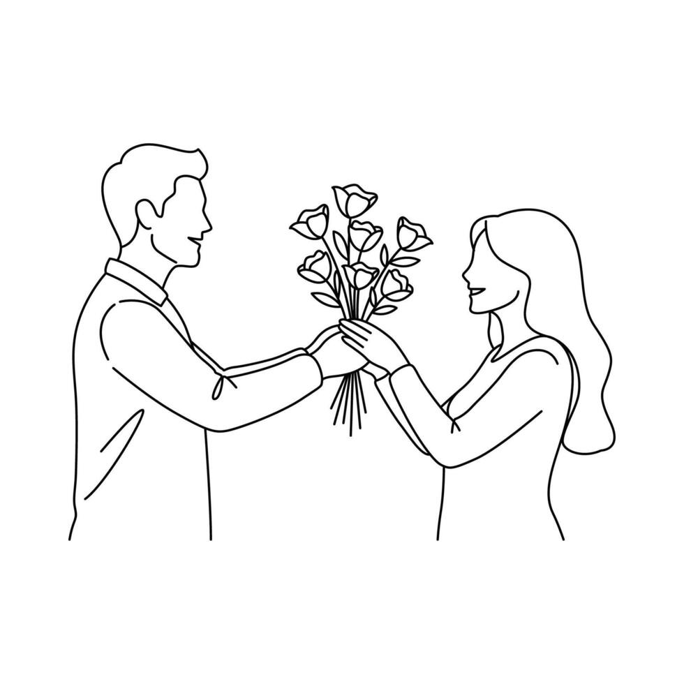

A Story
of Us
Table of Contents
The Beginning 03
The First Move 04
Times We Almost Ended 05
IG Notes06
The Call08
The Nights I am Happy 09
The Decision 10
The Struggles12
Conclusion13
The Beginning
When I first met you, I honestly did not think you would become important to me.
I didn't even know I was supposed to meet you.
It started with my friend asking me if I wanted a keychain.
I said yes.
I thought he was literally asking me if I wanted a keychain. I didn't know that the “keychain” he was talking about was you.
And somehow, that little misunderstanding became the beginning of us.
“Angkas ka nalang.”
I added you. We started talking.
And for my first move, instead of saying something normal, I sent you a video of cold-starting motorcycle.
“Angkas ka nalang, start ko na convo natin.”
HAHAHAHA.
I don't think either of us knew where that conversation would lead.
At that time, you were simply someone I had just met.
But the conversations continued. Little by little, you became someone I looked forward to talking to.
Times We Almost Ended
January
You told me that you weren't ready. So we stopped talking.
I could have tried to convince you. I could have asked you to stay. But I didn't.
Because even if I wanted to continue talking to you, I didn't want to pressure you.
But we couldn't really stay away from each other because we were still talking through Messenger Notes. We started talking again and even played ML together again. (tropa pala ha)
Before March End
We almost end again. Somehow in the starting week of April, we found our way back to each other.
Then came April.
This time, we started talking through Instagram Notes. We were basically throwing Notes at each other. One Note. Then another. Then another.
And that night, you were drunk, gumagawa kayo ng pisiks.
Maybe that's why you became more honest.
Until eventually, we were having an actual conversation.
You told me that I was “mahina para sa'yo” and that “masyado akong torpe para sa'yo.”
may bitaw yang mga notes mo'ng yan
“Ano bang galaw mo?” You asked me in notes
Natigilian ako, you're right... "ano bang galaw ko?".
I wasn't making a move because I was holding myself back. I remembered what you told me before.
You weren't ready.
I didn't want to pressure you. I didn't want you to feel like I was forcing something that you had already told me you weren't prepared for.
So if that made me look torpe...
then I guess I was.
“Torpe ka para sa'kin”
When you finally became sober, around 2:00 in the morning, you called me.
We talked. Really talked.
It wasn't just random conversation anymore. We talked about us. About what happened. About the things we didn't say before.
And maybe that conversation became one of the reasons everything started changing.
After that, we continued talking.
The Nights I am happy
There were nights when our conversations lasted until morning.
Sometimes we talked about serious things. Sometimes we talked about things that didn't matter at all. Sometimes the conversations became deep. Sometimes we were just making jokes and laughing.
Those were some of the moments when I was happiest.
Because even if you were far away, even if we were only talking through a call, I felt like I was spending time with you.
It felt like bonding.
May
On May 11, you told me three things that I never thought I would hear from you: “feelings are mutual,” “think that I have started to have feelings for you,” and “Actually, I wasn’t confused. It’s just that I cannot accept that I’m liking someone again.”
Those words left me speechless. We were working on our project at the time, but somehow, I suddenly had even more motivation to finish it because of how happy I was.
Can you believe it?
You actually liked me too.
I still remember how much I was smiling and how excited I felt when you finally said those words. I couldn’t believe that the feelings I had for you were actually mutual. That moment gave me a kind of happiness and kilig that I couldn’t even explain.
The Decision
After everything that happened, I eventually reached the point where I couldn't keep wondering anymore.
I knew what I wanted.
I wanted to court you.
So on June 1, I formally told you.
I wanted to court you.
This time, I wasn't hiding behind a joke. I wasn't waiting for another Note. I wasn't trying to figure out whether I should make a move.
I finally made one.
Your Tito Asked Me
But it wasn't only you I had to face.
Your Tito talked to me too. He asked me if I was serious about you.
And honestly, there wasn't much to think about.
I said yes.
Because I was serious.
I wasn't doing this just because I was bored. I wasn't courting you just because I wanted to see what would happen.
I was serious about you.
Yes. I'm serious.
There are times when life really tests us.
Like what happened before, when suddenly, you lost the interest and the motivation you once had.
We’re far from each other, and whenever something feels wrong, I can’t simply go to you and sit beside you. I can’t be there personally to talk about what we’re going through
All we have are our words, our messages, and the effort we make to understand each other despite the distance.
But then you said something that I never wanted to hear.
“Paano kung hindi na bumalik ang interest ko?”
Those words stabbed me.
They wrecked me more than I wanted to admit. For several nights, I kept thinking about them. I would try to distract myself, but somehow, those words would always find their way back into my mind.
What if it really doesn't come back? What if this is where everything ends?
I was scared.
Not because I didn’t understand you, but because I knew how much you meant to me. The thought of losing something we had only started building was painful.
But we talked.
And somehow, we got through it.
Maybe what happened was just another phase, another challenge that we had to face together. We were tested, but it didn't mean that we had to stop. Instead, we talked about what we felt.
We explained ourselves. We listened to each other. And little by little, we became clear about where we stood.
That experience taught me something.
Not every difficult moment means that is a ending. Sometimes, it simply means that both people need to slow down, talk, understand, and find their way back to each other.
And I know this won't be the last challenge we'll face.
There will probably be more days when things become difficult. More misunderstandings. More moments when one of us feels tired, confused, or uncertain. We don't know what every chapter of our journey will bring.
During those times, I promise to you that I will always choose you no matter what.
Think about how strange our story is.
It started because someone asked me if I wanted a keychain.
We talked. We stopped. We talked again. We stopped again. We found each other again.
Many times, I thought maybe that was it.
But somehow, we kept finding our way back.
We still here choosing each other.
Looking back, I realize this wasn't simply a story of two people getting closer. It was a story of two people repeatedly getting close, stepping away, and somehow finding their way back again.
As you say in your verse in poem
Marami pa akong tinta na uubusin
Mga papel na gagastusin
Mga tulang bibigkasin
At mga sulat na aawitin
To be continued...
click here for special